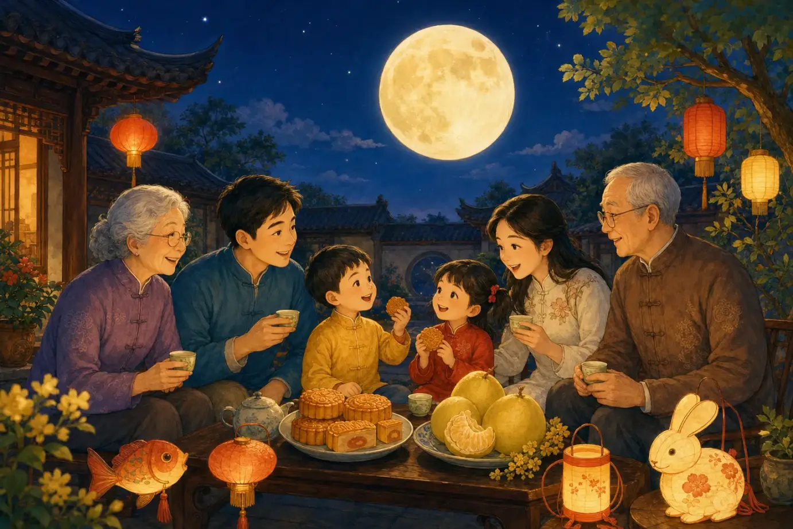
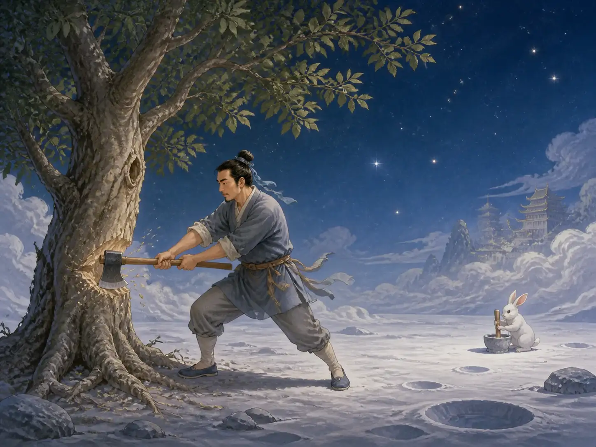

中秋节：月亮里的故事
Mid-Autumn Festival: Stories in the Moon
Page 1
月亮里，你看见了什么？
What Do You See in the Moon?

On Mid-Autumn night, a family shares mooncakes and looks up at the round moon together.
Zhōngqiū Jié · 农历八月十五赏月团聚的传统节日。在中国传统历法的八月十五。到了晚上，很多家庭会坐在一起看圆月、吃月饼。圆月和圆圆的月饼都象征着“团圆”，也就是一家人相聚在一起。
不过，这轮月亮还装着许多故事。中秋的晚上，如果天气晴朗，抬头仔细看看圆圆的月亮。明亮的月面上，是不是有一块一块深色的影子？
很久以前，中国人望着这些月影，想象出了各种各样的形状。有人觉得，那里好像长着一棵巨大的树。树下还站着一个曾经学习成仙的人。他的名字叫吴刚。
Zhōngqiū Jié · 中秋节 · The traditional festival of family reunion and moon viewing on the fifteenth day of the eighth lunar month. falls on the fifteenth day of the eighth month in the traditional Chinese calendar. At night, many families sit together, look at the full moon, and share mooncakes. The round moon and round mooncakes both symbolize family reunion.
But this moon holds many stories, too. On a clear Mid-Autumn night, look closely at the full moon. Do you see the darker patches across its bright surface?
Long ago, people in China looked at those shadows and imagined all kinds of shapes. Some thought they could see a giant tree. Beneath it stood a man who had once tried to learn the ways of the immortals. His name was Wu Gang.
Page 2
一棵怎么也砍不倒的树
The Tree That Refused to Stay Cut

Wu Gang swings his axe at the tree that refuses to stay cut, while the Jade Rabbit pounds medicine farther away.
古老的传说里，吴刚在学仙的时候犯了错。作为惩罚，他被送到月亮上，还得到了一项艰巨的任务——砍倒一棵巨大的桂树。
听起来，好像也不是做不到。吴刚举起斧头。咔！ 树干上出现了一道深深的斧痕。
可是，还没等他把树砍倒，奇怪的事情发生了。桂树自己长好了。刚刚砍出的伤口慢慢合上，好像从来没有被斧头砍过一样。
吴刚只好再来一次。咔！ 树又长好了。
无论吴刚砍多少次，桂树都会重新变得完好无损。所以在这个古老的传说里，直到今天，吴刚还在月亮上不停地砍树。
According to an old legend, Wu Gang made a mistake while he was learning. As punishment, he was sent to the moon and given an enormous task: he had to cut down a giant osmanthus tree.
That might not sound impossible. Wu Gang lifted his axe. Chop! A deep cut appeared in the trunk.
But before he could finish the job, something strange happened. The tree healed itself. The cut closed as if it had never been there.
Wu Gang swung his axe again. Chop! Again, the tree healed.
No matter how many times he chopped, the tree always became whole again. That is why, in the old legend, Wu Gang is still chopping today.
Page 3
月亮上的“咚咚”声
Thump, Thump, Thump
不过，人们想象中的月亮上，可不只有吴刚一个人在忙。如果你读过我们讲嫦娥奔月的那篇故事，也许已经注意到Cháng'é · 中国神话中飞到月亮上的人物。身边还有一只白兔。中国人叫它玉兔。
玉兔又在忙什么呢？咚。咚。咚。 它正拿着药杵捣药，而且不是普通的药。
中国古代有许多关于仙药的故事。人们想象，有些神奇的药可以让人活得非常久，甚至帮助人成为仙人。一首很古老的歌里，就写到一只白兔正在捣这样的仙药，做好以后把药献给皇帝。
那么，玉兔是在专门给嫦娥做药吗？在我们今天能找到的早期故事里，并不是这样。
But he is not the only busy figure people imagined on the moon. If you have read our story about Chang’e, you may already have noticed a white rabbit beside her. Chinese stories call it the Jade Rabbit.
And what is the rabbit doing? Thump. Thump. Thump. It is pounding medicine with a pestle. Not ordinary medicine, either.
Ancient Chinese stories often told of magical medicines that could give someone an extraordinarily long life—or even help a person become an immortal. In one very old song, a white rabbit pounds such a medicine and offers it to the emperor.
So was the Jade Rabbit making medicine especially for Cháng'é · 嫦娥 · The woman who flies to the moon in a famous Chinese legend.? Not in the earliest stories we know.
Page 4
传说住进了同一轮月亮
Stories Meet in the Moon
后来，经过很长很长的时间，不同的月亮传说慢慢交织在了一起。嫦娥、玉兔、桂树和吴刚，都住进了许多代中国人想象中的月亮世界。
所以下一个中秋夜，再抬头看看月亮上的影子吧。也许你会看见一只兔子举起药杵——咚。咚。咚。
而在不远处，那棵怎么也砍不倒的树下——咔！
Over many centuries, different stories about the moon became woven together. Chang’e, the Jade Rabbit, the osmanthus tree, and Wu Gang all became familiar figures in the moon imagined by generations of people in China.
So the next time you look at the Mid-Autumn moon, take another look at those dark shadows. Perhaps you will see a rabbit lifting its pestle. Thump. Thump. Thump.
And somewhere nearby, beneath a tree that refuses to stay cut—Chop!